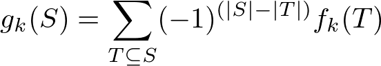
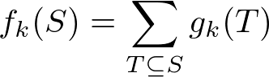

Chromatic Number
コードについての説明
グラフの頂点を隣り合う頂点は違う色となるように彩色するのに必要な色の数の最小値を彩色数と言い, それを求めるアルゴリズムである.
また彩色数は補グラフでの最小クリーク被覆の値と等しいことが知られている.
このスライドがとても参考になる.
(以下スライドの説明)
分かりやすく, "グラフ G = (V, E) が k 彩色可能 ⇔ V を k 個の独立集合で被覆可能" と言い換える. ここで各独立集合は disjoint とは限らないと定義しておく(こう定義しても同値性は変わらない).
このとき頂点集合 S (⊆ V) について f_k(S) を S に含まれる独立集合を k 個選ぶ場合の数、 g_k(S) を k 個の独立集合を選んでその和集合が S となるような場合の数とする.
包除原理から次の式が成り立つ. 
直接成り立つと考えてもいいし、  は明らかに成り立つのでその逆変換(Mobius 変換) と考えても良い.
I(S) を S に含まれる独立集合の個数とすると, f_k(S) = I(S)^k であり, I(S) は I(S) = I(S\{v]) + I(S\adj[v]) の漸化式を用いて O(n*2^n) 時間で求めることができる. 漸化式は v を含まない独立集合 と v を含む独立集合を分けて数え上げている(adj[v] は v および v に隣接する頂点集合とする).
最終的には g_k(V) が非ゼロとなるような最小の k が彩色数となる. 実装を行う際はオーバーフローを避けるため大きい素数 p を用いた Z_p 上で計算を行う.
時間計算量: O(n*2^n)
コード
class ChromaticrNumber {
public:
int V;
vector<int> adj;
const static int MOD = 1000000007;
ChromaticrNumber(int node_size) : V(node_size), adj(V, 0){
for(int i = 0; i < V; i++){
adj[i] = (1 << i);
}
}
void add_edge(int u, int v){
adj[u] |= (1 << v), adj[v] |= (1 << u);
}
int solve(){
vector<int> t(1 << V, 0), I(1 << V, 0);
t[(1 << V) - 1] = I[0] = 1;
for(int i = 1; i < (1 << V); i++){
int v = __builtin_ctz(i);
I[i] = I[i^(1 << v)] + I[i&(~adj[v])];
I[i] = (I[i] >= MOD)?(I[i] - MOD):I[i];
t[i-1] = (((V-__builtin_popcount(i-1))%2)?(MOD-1):1);
}
for(int k = 1; k < V; k++){
long long res = 0;
for(int i = 0; i < (1 << V); i++){
res += (t[i] = (long long)t[i] * I[i] % MOD);
}
if(res % MOD) return k;
}
return V;
}
};
verify 用の問題
verify していません(verify 問題を知らない)